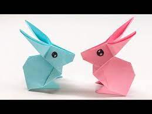

Butterfly
- You can make beautiful butterflies by watching this video. Click on the image to watch the video.
- Butterflies are colourful insects. They have six legs.
- They taste with their feet.
Candy
- You can make colourful candies by watching this video. Click on the image to watch the video.
- Almost everyone loves candies. Kids love to eat them.
- Don't forget to add the name of the flavours!.
Dog
- You can make cute dogs by watching this video. Click on the image to watch the video.
- Dogs are very loyal and protective.
- Their sense of smell is at least 40x better than ours.

Dress
- You can make beautiful dresses by watching this video. Click on the image to watch the video.
- You can use this dress for decoration or for you toys .
- Beautiful dresses charm everyone.

Fish
- You can make cute fishes by watching this video. Click on the image to watch the video.
- There are over 30,000 different species of fish.
- Jellyfish, Starfish and Crayfish aren't really fish.

Turtle
- You can make cute dogs by watching this video. Click on the image to watch the video.
- Turtles are some of the oldest animals around.
- The largest turtles weigh more than a thousand pounds.

Hummingbirds
- You can make cute Hummingbirds by watching this video. Click on the image to watch the video.
- Hummingbirds are the only birds that can fly backwards.
- The name, hummingbird, comes from the humming noise their wings make as they beat so fast.

Rabbit
- You can make cute rabbits by watching this video. Click on the image to watch the video.
- They can find out what's happening behind them without turning.
- They are very soft and fluffy and many people keep them as pets.